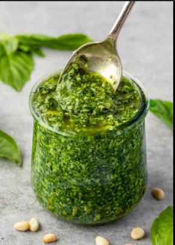

Pesto Sauce

Description
This pesto sauce recipe is a quick and easy pasta topping. A great change from red sauce.
Ingredients
- 3 cups fresh basil leaves
- 1 ½ cups chopped walnuts
- 4 cloves garlic, peeled
- ¼ cup grated Parmesan cheese
- 1 cup olive oil
- Salt and pepper to taste
Steps
- Gather all ingredients
- Blend together basil leaves, nuts, garlic, and cheese in a food processor until finely chopped.
- Pour in oil slowly with the processor running. Season with salt and pepper.